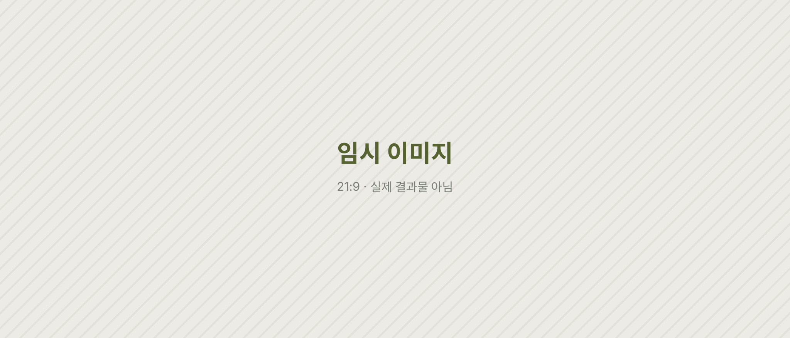
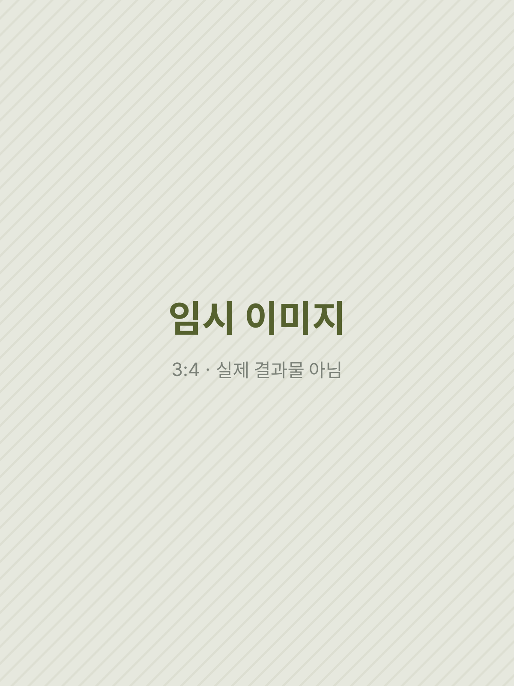
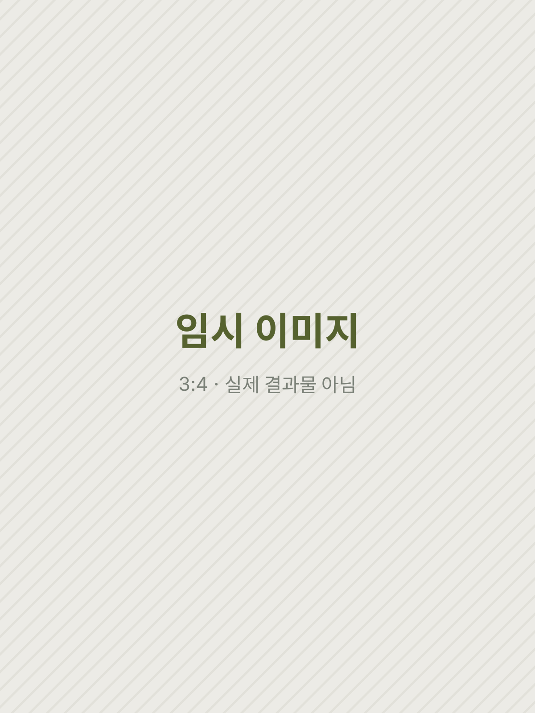
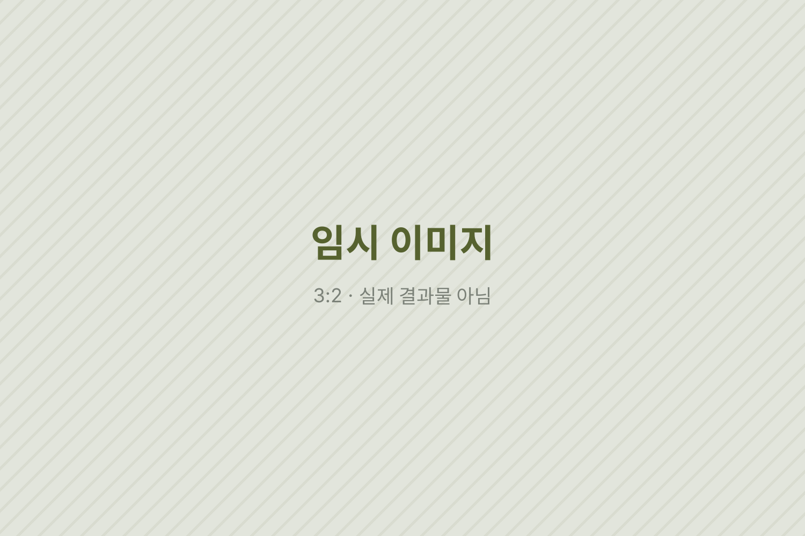

임시 시안 · 이 페이지의 글·이미지·영상은 레이아웃 확인용 더미입니다. 실제 원고와 결과물로 바뀔 예정입니다.
(4) · Independent Magazine · Publishing
신감각, 신당동
왜 신당동을 이야기할 때는 늘 트렌드부터 말할까?
뜨는 동네를 유행이 아니라, 새것과 오래된 것이 만나는 골목의 언어로 읽기. 신당동이 일깨우는 다섯 가지 감각으로 엮은 독립잡지다.
Situation트렌드라는 이름의 첫 문장
동네가 이야기될 때 첫 문장은 대개 '요즘 뜨는'으로 시작한다. 새로 생긴 가게와 줄 서는 풍경이 먼저 소개되고, 그 골목을 오래 지켜 온 사람들의 시간은 뒤로 밀린다. (임시 원고)
이 문단에는 왜 신당동이었는지, 그리고 기존의 동네 콘텐츠가 놓치고 있다고 본 것이 무엇이었는지가 들어간다.

Solution다섯 가지 감각으로 읽는 골목
신당동이 일깨우는 감각을 시각·후각·미각·청각·촉각 5개 챕터로 구성하고, 로컬 브랜드 24곳 취재기와 소상공인·주민 인터뷰를 수록했다. 에디터 29명이 8개 팀으로 나뉘어 61번 회의했다.


이 문단에는 편집장으로서 내린 결정 한두 가지가 들어간다. 다섯 감각이라는 틀을 정한 이유, 챕터의 순서, 직접 쓴 지면이 어디인지를 구체적으로 적는다. (임시 원고)
새것과 오래된 것이 만나는 골목의 언어로 읽기.
기획 의도
스티커·엽서·포스터·문진 후원 리워드도 기획했다.

Result펀딩과 서가
텀블벅 펀딩 163%를 달성했다(1,550,000원 · 후원자 79명, 2023.06.05–07.03). 홍보 계정의 월간 도달은 4.3k, 릴스 최고 조회는 1.27k였고, 종이잡지클럽 서울·제주에 입고됐다.

이 문단에는 후원자를 움직인 것이 무엇이었는지에 대한 해석과, 다음 잡지를 만든다면 바꿀 것 한 가지가 들어간다. (임시 원고)